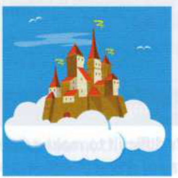
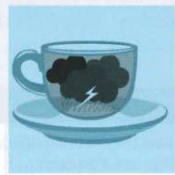
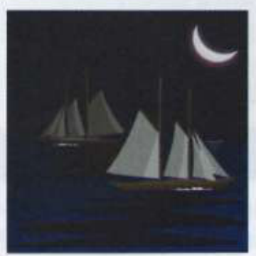
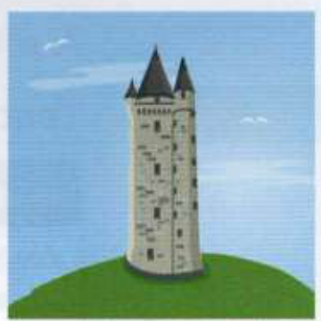

Bài tập
22.1
Trả lời các câu hỏi sau. Sử dụng thông tin ở Phần A ở trang đối diện để giúp bạn.
1
Người giúp việc nào đã giúp Robinson Crusoe?
2
Họ của nửa xấu xa trong con người Bác sĩ Jekyll là gì?
3
Các nữ nhân vật chính trong truyện cổ tích thường yêu ai?
4
Nhân vật độc tài nào được cho là đang theo dõi mọi việc chúng ta làm?
5
Ai đã lọt vào một hang động chứa đầy kho báu?
22.2
Hoàn thành mỗi câu với một nhân vật văn học ở bài 22.1.
1
My sister's getting married next week. I'm so happy she's found her .......................................................... (Chị gái tôi sẽ kết hôn vào tuần tới. Tôi rất vui vì chị ấy đã tìm thấy [Prince Charming - chàng hoàng tử trong mơ] của mình.)
2
The Internet service providers know exactly which websites we visit - ...................................................... is watching us all the time. (Các nhà cung cấp dịch vụ Internet biết chính xác những trang web chúng ta truy cập - [Big Brother - kẻ độc tài theo dõi/Kẻ Cả] luôn theo dõi chúng ta.)
3
My life is totally chaotic. I need a ......................................................... to help me with everything. (Cuộc sống của tôi hoàn toàn hỗn loạn. Tôi cần một [Man Friday - trợ thủ đắc lực] để giúp tôi mọi việc.)
4
The old cupboard was a(n) ..........................................................'s cave of valuable objects. (Chiếc tủ cũ là một hang động [Ali Baba - kho báu chứa nhiều đồ vật quý giá] chứa các đồ vật có giá trị.)
5
Roberto is a real Jekyll and ......................................................... character. You can never predict how he's going to behave. (Roberto là một nhân vật có tính cách [Jekyll and Hyde - hai mặt thiện ác lẫn lộn/thay đổi thất thường]. Bạn không bao giờ có thể đoán trước được anh ấy sẽ hành xử ra sao.)
22.3
Viết lại phần gạch dưới của mỗi câu bằng cách sử dụng từ trong ngoặc.
1
Don't worry, it's just one of those problems where everyone gets upset and then it's forgotten. [STORM] (Đừng lo lắng, đó chỉ là một trong những vấn đề khiến mọi người nổi giận rồi lại bị lãng quên ngay [viết lại bằng: a storm in a teacup (chuyện bé xé ra to)].)
2
He wants to borrow a lot of money to go travelling, but paying it back could become a problem that he can't escape from. [NECK] (Anh ấy muốn vay rất nhiều tiền để đi du lịch, nhưng việc trả nợ có thể trở thành một gánh nặng mà anh ấy không thể thoát khỏi [viết lại bằng: an albatross around his neck (gánh nặng nợ nần/nỗi ràng buộc)].)
3
Why are you just getting a new fridge and cooker? Why not do things completely and get a new kitchen? [WHOLE] (Tại sao bạn chỉ mua tủ lạnh và bếp mới? Tại sao không làm mọi thứ một cách triệt để và làm lại cả căn bếp mới? [viết lại bằng: go the whole hog (làm cho tới cùng / chơi lớn)].)
4
He's always got some new money-making plan or scheme, but most of the time they're just plans that will never happen. [AIR] (Anh ấy luôn có kế hoạch hoặc dự án kiếm tiền mới, nhưng hầu hết thời gian chúng chỉ là những kế hoạch không bao giờ xảy ra [viết lại bằng: castles in the air (lâu đài trên cát/mơ mộng hão huyền)].)
5
I met him ten years ago and then saw him again last year. We seem to be like people who enter and leave each other's lives after a short time. [SHIPS] (Tôi gặp anh ấy mười năm trước và rồi gặp lại vào năm ngoái. Chúng tôi dường như giống như những người bước vào và rời khỏi cuộc sống của nhau sau một thời gian ngắn [viết lại bằng: ships that pass in the night (những người tình cờ lướt qua nhau/khách qua đường)].)
22.4
Nối phần đầu của mỗi câu với phần cuối tương ứng.
1
She's very direct and always calls (Cô ấy rất thẳng tính và luôn...)
d
a
Catch-22 situation. (tình thế tiến thoái lưỡng nan.)
2
I found myself in a ridiculous (Tôi thấy mình rơi vào một tình cảnh nực cười...)
b
a storm in a teacup. (chuyện bé xé ra to.)
3
People say that academics live in (Người ta nói rằng các học giả sống trong...)
c
ivory towers. (tháp ngà [nơi xa rời thực tế].)
4
There's nothing to worry about; it's just (Không có gì phải lo lắng cả; đó chỉ là...)
d
a spade a spade. (nói thẳng nói thật.)
22.5
Những hình ảnh này gợi cho bạn nghĩ đến những thành ngữ nào?
1

......................................................
2

......................................................
3

......................................................
4

......................................................
Đến lượt bạn
Sử dụng Internet để tìm hiểu nguồn gốc văn học của các thành ngữ ở Phần B ở trang đối diện. Trang web The Phrase Finder tại www.phrases.org.uk là một nơi tốt để bắt đầu nghiên cứu của bạn.